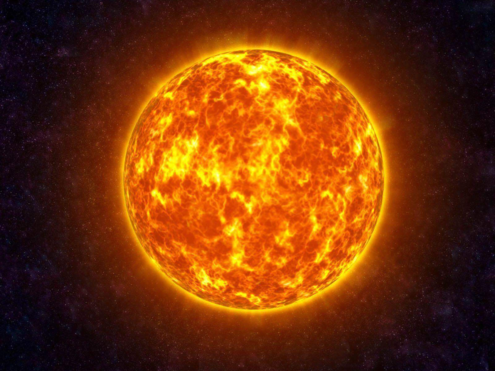

| The Sun is the star located at the centre of the Solar System. It is a massive sphere of hot plasma, heated to incandescence by nuclear fusion reactions in its core, radiating the energy from its surface mainly as visible light and infrared radiation with 10% at ultraviolet energies. It is the main source of energy for life on Earth. The Sun has been an object of veneration in many cultures and a central subject of astronomical research since antiquity. The Sun orbits the Galactic Center at a distance of 24,000 to 28,000 light-years. Its mean distance from Earth is about 1.496×108 kilometres or about 8 light-minutes. The distance between the Sun and the Earth was used to define a unit of length called the astronomical unit (au), now defined to be 149.5978707×106 kilometres. It is the largest and most massive object in the Solar System, its diameter is about 1,391,400 km (864,600 mi), around 109 times that of Earth's. The Sun's mass is around 330,000 times that of Earth's, making up about 99.86% of the total mass of the Solar System. The mass of the Sun's surface layer, its photosphere, consists mostly of hydrogen (~73%) and helium (~25%), with much smaller quantities of heavier elements, including oxygen, carbon, neon, and iron. The Sun formed approximately 4.6 billion[a] years ago from the gravitational collapse of matter within a region of a large molecular cloud. Most of this matter gathered in the centre; the rest flattened into an orbiting disk that became the Solar System. The central mass became so hot and dense that it eventually initiated nuclear fusion in its core. It is now classified as a G-type main-sequence star (G2V). Every second, the Sun's core fuses about 600 billion kilograms (kg) of hydrogen into helium and converts 4 billion kilograms of matter into energy. |